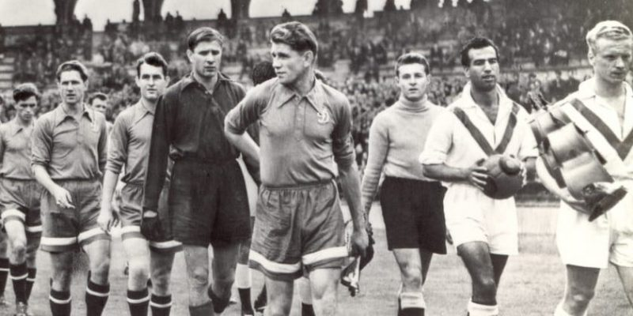

La historia del fútbol se remonta a juegos con pelota de diversas culturas antiguas, pero su forma moderna se originó en la Inglaterra del siglo XIX, con la creación de la Asociación de Fútbol en 1863. La influencia de los códigos británicos, como el de Cambridge en 1848, fue crucial para establecer las reglas unificadas que rigen el deporte hoy en día.
Las reglas del fútbol son establecidas por la International Football Association Board (IFAB) y son seguidas por todas las competiciones oficiales. El objetivo del juego es marcar goles, haciendo que el balón cruce la línea de gol adversaria entre los postes y debajo del travesaño. Cada equipo está compuesto por 11 jugadores, incluido el portero, que es el único jugador permitido a usar las manos dentro de su área. Las posiciones de los jugadores incluyen portero, defensores, mediocampistas y delanteros, cada uno con funciones específicas. Los defensores defienden el gol, los mediocampistas conectan defensa y ataque, y los delanteros intentan marcar goles. Las infracciones comunes incluyen el uso de las manos (excepto por el portero), faltas (como empujar o patear a un adversario) e impedimento (cuando un jugador recibe el balón estando más cerca del gol que el penúltimo defensor). Las penalizaciones por estas infracciones varían desde tiros libres directos o indirectos hasta tarjetas amarillas (advertencia) y rojas (expulsión). El árbitro es responsable de aplicar las reglas y mantener el orden durante el juego, pudiendo contar con la ayuda del VAR (árbitro asistente de video) en decisiones controvertidas.

Obviamente en esta lista, elaborada en 2004, no figuran estrellas del futbol actual del siglo XXI como el argentino Lionel Messi o el portugués Cristiano Ronaldo.
El fútbol tiene un impacto profundo en la sociedad y en la cultura global. Promueve valores como el trabajo en equipo, el respeto y la inclusión, siendo una herramienta poderosa para la educación y la integración social. El deporte se utiliza a menudo en programas de desarrollo comunitario y en iniciativas para promover la paz y la solidaridad. El fútbol también sirve como un factor de identidad nacional y regional. Los aficionados de todo el mundo se conectan con sus clubes y selecciones, creando un sentido de pertenencia y orgullo. Grandes eventos como la Copa Mundial y la UEFA Champions League no solo entretienen, sino que también unen a personas de diferentes orígenes y culturas en una celebración global del deporte. Además, los jugadores de fútbol a menudo se convierten en figuras influyentes fuera de los campos, comprometiéndose con causas sociales y utilizando su popularidad para promover cambios positivos. El impacto cultural del fútbol es visible en áreas como la moda, la música y los medios, donde el deporte inspira e influye en tendencias y comportamientos.